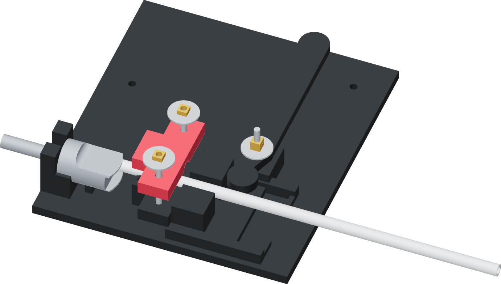

Open the grip and lift away
The tool comes off without pulling the sleeved tube back out of the donor.

- Move the press lever back to release the ram load. Keep the donor and tube supported.
- Loosen the two jaw screws and open the upper jaw. Lift both tool halves off the tube without sliding a closed grip along it.
- Lift the donor and tube together out of the nest. Leave the faucet lever attached at unpressed rest.
- Check the seating witness and the released gripping area. The tube must remain round, without a persistent flattened section, gouge or folded sleeve.
Finished when
The tooling is removed, the tube retains its seating witness and the released gripping area remains round.